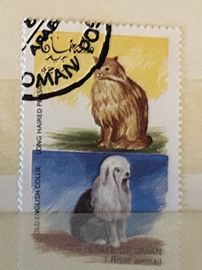
| SOURCE | TITLE| IMAGE MATCH | click to source page |
| eBay | Oman Postage Stamp | eBay | 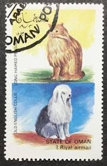 |
| eBay | 859545) Dogs, Small lot, Afghanistan | eBay | 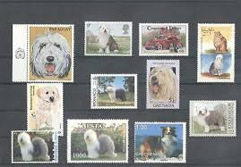 |
| eBay | Dogs Postage Monacan Stamps for sale | eBay | 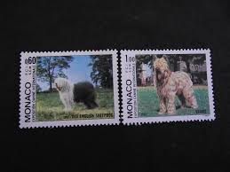 |
| eBay | United Kingdom UK Great Britain 9p Old English Sheepdog Postage Stamp | eBay | 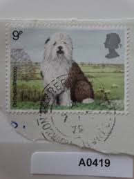 |
| Osta | GB 1979. Vana-inglise lambakoer. Tembeldatud. (217490941) - Osta.ee | 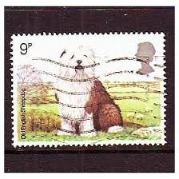 |
| BalkanAuction | Postage stamps | Philately | Collectibles | BalkanAuction | 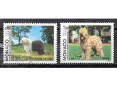 |
| Etsy | Buy 10 X Old English Sheepdog Used British Postage Stamps for Collecting or Collage Online in India - Etsy | 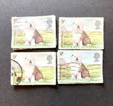 |
| Mystic Stamp Company | 1638 - 1969 Poland - Mystic Stamp Company | 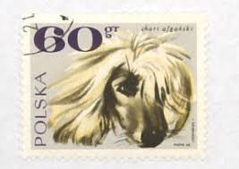 |
| Azur Philatélie | Buy this stamp of Monaco of the year 1961 (Nb 551). | 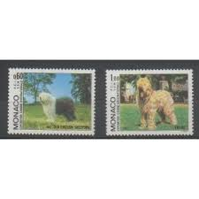 |
| eBay | 859549) Dogs, Small lot, World | eBay | 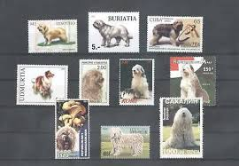 |
| 4StampSales | Monaco - 1971 Cocker Spaniel Dogs - Stamp - Scott #810 | 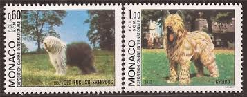 |
| Overblog | Bobtail chien de berger anglais - phil@telier | 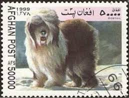 |
| Star and Stamp Store | Monaco | Mi 1533-1534 – Star and Stamp Store | 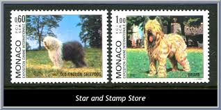 |
| Delcampe | Bhutan - BHUTAN, 2006, Lunar Dog Year , Set 4 v, Traffic Lights, MNH, (**) | 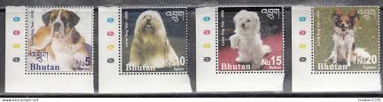 |
| eBay | Great Britain stamp - Old English Sheepdog 9p British penny 1979 Sg 1075 | eBay | 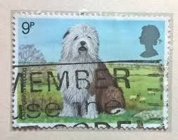 |
| Shutterstock | Great Britain Circa 1978 Stamp Printed Foto de stock 277159496 | Shutterstock | 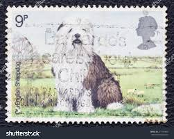 |
| eBay | R5431 Monaco 1982 Dogs 2v. MNH | eBay | 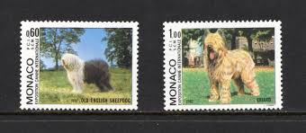 |
| eBay | GB 1979 DOGS HARRISON & SONS PRESENTATION FOLDER mint stamps 4 British collector | eBay | 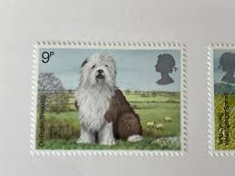 |
| eBay UK | Dogs Great Britain Elizabeth II Pre-Decimal Stamps (1952-1971) for sale | eBay UK | 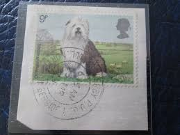 |
| Etsy | Old English Sheepdog Stamp - Etsy | 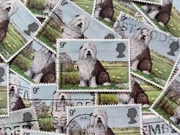 |
| Avion Thematics | St Lucia 1891-98 QV Key Plate 10s Crown CA Fine Cds Used SG52, stamps on , stamps on qv , stamps on | 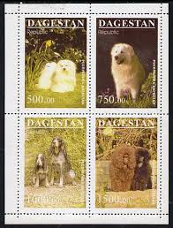 |
| eBay | 859544) Dogs, Small lot, Afghanistan | eBay | 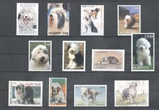 |
| eBay | LONDON 1979 Crufts Exhibition Old English Sheepdog Dog Postcard ENG | eBay | 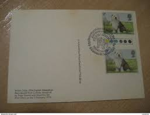 |
| eBay | Great Britain-British Stamps-Various Adv Art Sets-69 Postcards Large Group Lot | eBay | 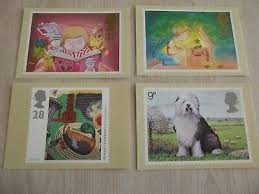 |
| postio.jp | 犬・いぬ - 外国切手の通販・北欧・東欧・海外の切手を販売・ポスティオ・マルシェ | 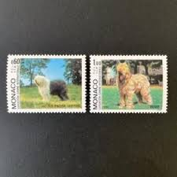 |
| eBay | 1979 West Highland dog postage stamp | eBay | 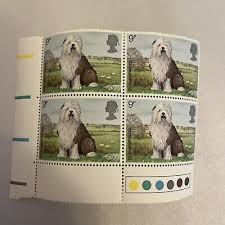 |
| Filatelia Kevorkian | HUNGARY/STAMPS, 2007 - DOMESTIC ANIMALS - DOGS - YV 4188/91 + BF 302 - 4 VALUES - MNH - Filatelia Kevorkian | 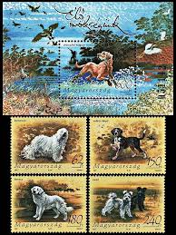 |
| Polska6.pl | Znaczki Polska6.pl - Sklep filatelistyczny | 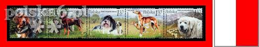 |
| Sampoma Sammlerposten | Europa | Südwesteuropa | Monaco | 1533-1534 (kompl.Ausg.) | postfrisch | 1982 Hundeausstellung | Price: 7,99 EUR. | 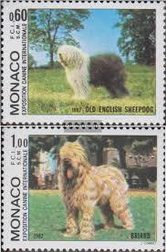 |
| eBay | Las mejores ofertas en Perros Sellos MONACAN | eBay | 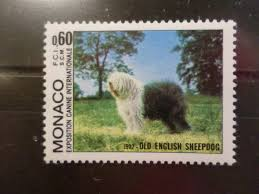 |
| eBay | Dogs British Elizabeth II Stamps for sale | eBay | 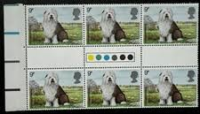 |
| eBay UK | Stamps : Great Britain Nature Plants, Birds,Animals,Dogs, face value £4.65p. | eBay UK | 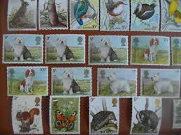 |
| Todocolección | monaco , exposicion canina de monte carlo - Acheter Timbres anciens de Monaco sur todocoleccion | 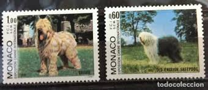 |
| Avion Thematics | Avion Thematics Stamps | Search for stamps on Turkmenistan+dog | 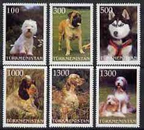 |
| eBay UK | GB 1979 - DOGS SERIES - FINE FULL SET OF FOUR DOUBLES MINT STAMPS - ALL MNH | eBay UK | 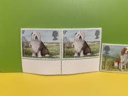 |
| eBay | 1979 West Highland dog postage stamp | eBay | 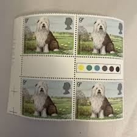 |
| livedoor.jp | 海外の古切手のおはなし～動物編～ : 雑貨パトロール | 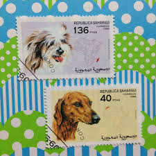 |
| eBay | Vintage Lot DOGS POSTAGE STAMPS Set Republique Du Mali Africa NOS UNUSED | eBay | 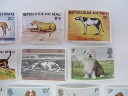 |
| eBay UK | 4 Sets of 6 Stamp Blocks of GB 1979 Dogs with traffic light gutter pairs | eBay UK | |
| 麦稀奇 | 澳大利亚邮票- 泡泡堂外币- 泡泡堂外币- 麦稀奇 | 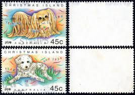 |
| pashto or dari to english) can someone translate the texts on these posters for me? : r/translator | 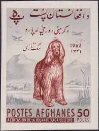 | |
| Art Stamped | 10 x Old English Sheepdog Dog, used, British postage stamps - Dogs | Art Stamped | 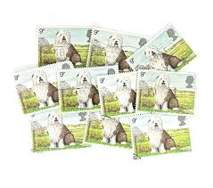 |
| Flickr | amaterasu98 | Flickr | 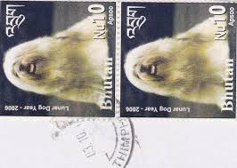 |
| HipStamp | Sharjah stamps. Used Set of six Dogs | Middle East - United Arab Emirates, Stamp / HipStamp | 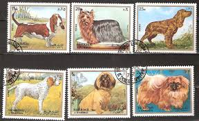 |
| eBay UK | Old English Sheepdog Stamps X3 - 9p - Unused | eBay UK | 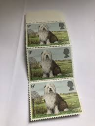 |
| eBay | EQUATORIAL GUINEA SHEETLET OF 8 DOGS MNH | eBay | 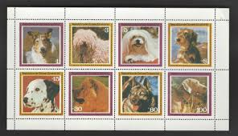 |
| Todocolección | monaco 1329/30 sin charnela, fauna, perros, exp - Buy Antique stamps of Monaco on todocoleccion | 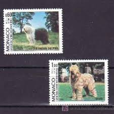 |
| sgycjuniorsailing.org | Bandera Poliéster Grande Bandera De Bienvenida Perro Pastor Inglés - Tamaño Grande, Multicolor, 28x40 Pulgadas Bandera Perro | 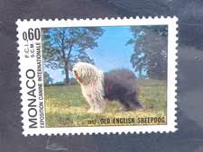 |
| Alamy | MANAMA - CIRCA 1972: a stamp printed in the Manama shows Dog and Cat, Pets, circa 1972 Stock Photo - Alamy | 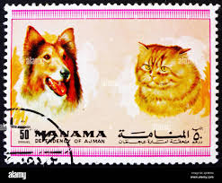 |
| eBay | Central African Republic 11999 Dogs Scott# 1284 Mint NH | eBay | 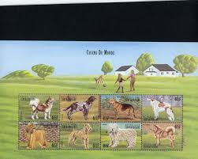 |
| Meditative Philately | Dog Stamp Cocker Spaniel Golden Retriever Pet Animal Serie Set MNH – Meditative Philately | |
| Stamp Auction Network | Ron Leith Auctions Sale - 53 Page 46 | |
| eBay UK | Dogs Equatorial Guinean Stamps for sale | eBay UK | |
| Phil India Stamps | Bhutan - Stamps / FDCs| dog| Phil India Stamps | |
| eBay UK | GB QEII Stamps - Old English Sheepdog 9p, SG1075, 1979 - Gutter Pair | eBay UK | |
| Todocolección | monaco - 1368 - 1983 cent. de la iglesia de st. - Acheter Timbres d'autres pays européens sur todocoleccion | |
| Skelbiu | Skelbimai: lankomiausias Lietuvoje pardavimo, nuomos ir kitų skelbimų portalas - Skelbiu.lt | |
| Vatera | 2007. Élő örökségünk-Kutyák blokk+sor ** Né+20% - ár adatbázis katalógus - Vaterakatalogus.hu | |
| eBay UK | Dogs Great Britain Commemorative Stamps (1970s) for sale | eBay UK |